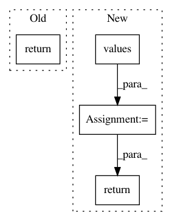

0d66931e6da93fda1c07388e6a2ed16d9a129040,src/syft/core/store/store_memory.py,MemoryStore,get_objects_of_type,#MemoryStore#Any#,33
Before Change
if isinstance(obj.data, obj_type):
results.add(obj)
return results
@syft_decorator(typechecking=True)
def __sizeof__(self) -> int:
return self._objects.__sizeof__()
After Change
self.post_init()
def get_objects_of_type(self, obj_type: type) -> Set[AbstractStorableObject]:
return {obj for obj in self.values() if isinstance(obj.data, obj_type)}
@syft_decorator(typechecking=True)
def __sizeof__(self) -> int:
return self._objects.__sizeof__()
In pattern: SUPERPATTERN
Frequency: 3
Non-data size: 4
Instances
Project Name: OpenMined/PySyft
Commit Name: 0d66931e6da93fda1c07388e6a2ed16d9a129040
Time: 2020-08-29
Author: jason.paumier@gmail.com
File Name: src/syft/core/store/store_memory.py
Class Name: MemoryStore
Method Name: get_objects_of_type
Project Name: OpenMined/PySyft
Commit Name: 489972a9e467eb20a7ebbe2b5e37c63b3d5bb2aa
Time: 2020-10-19
Author: murarugeorgec@gmail.com
File Name: syft/frameworks/torch/tensors/interpreters/additive_shared.py
Class Name: AdditiveSharingTensor
Method Name: get_garbage_collect_data
Project Name: ray-project/ray
Commit Name: 7c0200c93b88898507dbafcb2d92314d0dbcd451
Time: 2020-04-28
Author: ed.nmi.oakes@gmail.com
File Name: python/ray/serve/master.py
Class Name: ServeMaster
Method Name: get_all_endpoints